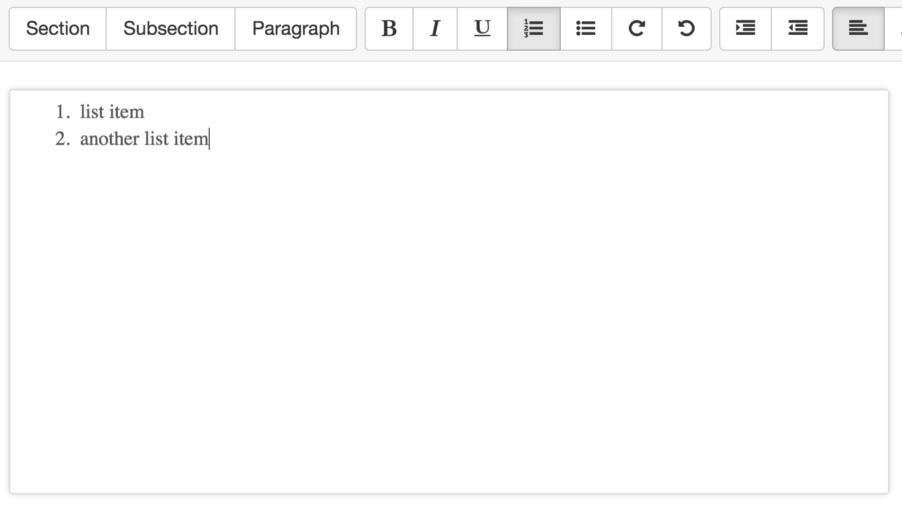

Step 1: Generate HTML with textAngular

Generated HTML
<ol>
<li>list item</li>
<li>another list item</li>
</ol>
Step 2: HTML is sent to server
See Client > Controller for more information.
While typing angular.js keeps $scope.data.htmlContent updated
$scope.data.htmlContent = '<ol><li>list item</li><li>another list item</li></ol>';
Frontend controller code involved (simplified)
function refresh() {
var postData = {
"htmlCode": '<ol><li>list item</li><li>another list item</li></ol>',
"type": 'article',
}
$http.post("/company/document/compile", postData)
.success(function(data, status, headers, config) {
if (status === 'success') {
// update preview
}
});
};
Step 3: Server recieves post request
See Server > Routes for more information.
The request $http.post("/company/document/compile", postData) triggers app.post('/:group/:document/compile', function(request, response){} where the postData now is in request.params.
app.post('/:group/:document/compile', function(request, response){
var filename = request.params.document.split('.')[0];
var group = request.params.group.split('.')[0];
var latexType = request.body.type;
var html = request.body.htmlCode;
var latexCode = '';
}
With that new input the parser gets called.
var parsedLatex = Parser('parseComplete', ['<ol><li>list item</li><li>another list item</li></ol>'], {latexType: 'article'});
Step 4: Parse the HTML string to a DOM object
See Parser > Code for more information.
The htmlparser2.parseComplete call first generates a DOM object from the html input
[{
type: 'tag'
name: 'ol'
attribs: {}
children: [
{
type: 'tag'
name: 'li'
attribs: {}
children: [
{
data: 'list item'
type: 'text'
next: null
prev: null
parent: {+}
}
]
next: {+}
prev: {+}
parent: {+}
},{
type: 'tag'
name: 'li'
attribs: {}
children: [
{
data: 'another list item'
type: 'text'
next: null
prev: null
parent: {+}
}
]
next: {+}
prev: {+}
parent: {+}
}
]
next: null
prev: null
parent: null
}]
Step 5: Parse the DOM object to a latex string
The simplified recursive call uses sanitizeLatex and the templates
function domToLatex(node, classType) {
// end of recursion
if (node.type === 'text') {
return sanitizeLatex(node.data);
}
if (node.type === 'tag') {
for (var i = 0; i < node.children.length; i++) {
text += domToLatex(node.children[i], classType);
};
// use tag templates
return templates[article][tag_name]({"content": text});
}
}
With that <ol><li>list item</li><li>another list item</li></ol> becomes
\begin{enumerate}
\item list item
\item another list item
\end{enumerate}
This latex string is now returned back into the compile route.
Step 6: Include generated latex in article template
See Server > _texFiles for more information about the article template.
With the line latexCode = latexTemplates.article({latexCode: parsedLatex}) the latex string is now:
\documentclass{defaultArticle}
\begin{document}
\begin{enumerate}
\item list item
\item another list item
\end{enumerate}
\end{document}
Step 7: Write latex string to file
The new latex string is passed to the Server > Models > compiler.js where it is saved to document.tex.
fs.writeFile(fileInDirectory, latexCode, function(err){
var tex = new pdflatex(fileInDirectory, outputDirectory, doc);
tex.compile();
}
Step 8: Compile document.tex
The document.tex is now handed over to Server > Models > pdflatex.js where the pdflatex command is started.
var command = "pdflatex -interaction nonstopmode -output-directory " + this.outputDirectory + " " + this.inputPath;
exec(command);
Step 9: Send result back to client
If pdflatex is successful the url to the new pdf is sent back. Otherwise an error is sent to the client.
if (error !== null) {
// if pdflatex fails call _callback with an error
_callback({error: 'Could not create ' + parent.filename + '.pdf'});
} else {
// if pdflatex succeds call _callback with the new path to pdf
_callback({filePath: __server + '_texFiles/' + parent.filename +'.pdf'});
}
Step 10: Client handles the return
In this given example the refresh call started the whole chain. Therefore pdfDelegate.$getByHandle('pdf-preview').load(data.redirect); is called in Client > Controller. That reloads the pdf-preview.
Step 11: Repeat the refresh every 10 seconds
The refresh call is repeated every 10 seconds.